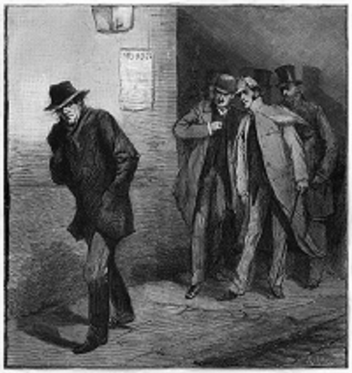
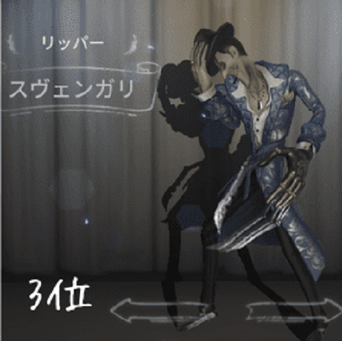
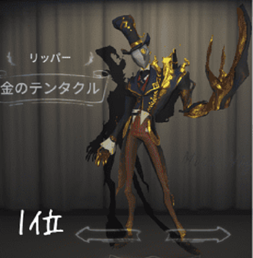
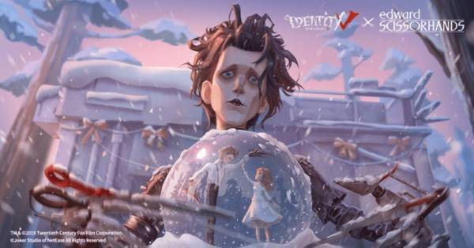
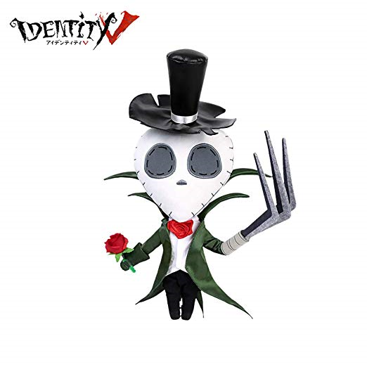

ジャック・ザ・リッパーとは、アプリゲーム「IdentityV」に登場するハンターであり、
そのモデルとなったのは、あの有名な殺人鬼「切り裂きジャック」だと言われている。
切り裂きジャック（英: Jack the Ripper、ジャック・ザ・リッパー）は、1888年にイギリスで連続発生した猟奇殺人事件および犯人の通称。
世界的に有名な未解決事件であり、現在でも犯人の正体についてはいくつもの説が唱えられている。
死神のようなその姿は、まさに三途の川を彷彿とさせる姿をしている。
不気味な笑みを浮かべるこの衣装は、まさに猟奇的殺人を楽しんでいたであろうジャックを象徴するかのようだ。
金をあしらったこの衣装は、高級感の中にどこか狂気を感じるような気がするのは筆者だけだろうか?
ジャック・ザ・リッパーはあの有名な映画シザーハンズともコラボしており、また違った印象を受ける。
あの猟奇的殺人者リッパーからは想像もつかない優しい一面がうかがえるこの画像、
やさしさの裏には鋭くとがれた爪を隠しているのだろうか…？
いつもの狂気的な容姿とは違いとてもキュートな姿をしており、
ハンターから逃げ惑うサバイバーたちを応援してくれる存在だ。
さて、ここまで長々とリッパーの紹介をしてきたが結論を言ってしまえば、
自分の目で見て確かめることを強くお勧めしたいとと思う。